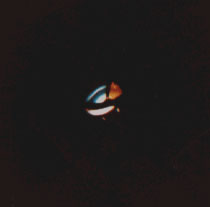

Vague d'observations d'ovnis par la police d'état, tout comme au
radar, en Oklahoma, Texas, Kansas, et au Nouveau-Mexique, rapportée par le New York Times et d'autres
journaux
(début du mois ou juillet) Près de Marmande, observation d'un disque décollant d'un
champ "Marmande : une
soucoupe a atterri", Paris Jour, 1965-08-03.
A Shawnee, Oklahoma, plusieurs patrouilles de police
décrivent des objets lumineux inconnus maintenant une formation en losange. L'observation dure .
Les différents bureaux d'Oklahoma City reçoivent durant la nuit près de 30 signalements.
Le phénomène tel qu'il aurait été photographié le 2 août à Tulsa (Oklahoma)

Photographie de Tulsa
Alors qu'il roule sur l'autoroute de Santa Ana (Log
Angeles), le cantonnier Rex Heflin
observe un ovni en forme de disque. Il s'arrête et le photographie. Il se rend alors compte qu'il s'agit d'un disque
surmonté d'un dôme non ovoïde (comme un chapeau). La photographie sera authentifiée par l'USAF.
A Dallas, Texas, J. A. Carter (19
ans), voit 1 lumière voler rapidement et horizontalement durant P12SCas Blue Book n° 9675 non résolu.
A Tinley Park, Illinois, 2 adolescents de 14 ans voient une
lumière de déplacer dans le ciel durant P16S à P17SCas Blue Book n° 9680 non résolu.
Le camionneur Don Tenopir, du Nebraska, fait route au nord
vers
Abilene avec un chargement de céréales. Un ovni descend du ciel au-dessus de son
camion puis se pose sur la route devant lui. Une voirture, venant en sens inverse, contourne l'engin et s'arrête
dans un crissement de pneus. Tenopir écrase la pédale de frein. Ses phares cessent de fonctionner, bien que son
semi-remorque GMC Diesel continue de rouler : l'ovni se déplace et les phares du camion se remettent en marche.
Tenopir peut maintenant voir l'objet : 1 disque (surmonté d'une coupole) d'environ 4 m de diamètre, stationnant
à quelques mètres du sol. Il y a des fenêtres carrées sur le dessus. Mort de peur, Tenopir ne bouge pas de sa
cabine, mais le conducteur de la voiture en sort et s'approche de lui. Avant qu'ils ne puissent s'entretenir,
l'ovni projette des étincelles d'où il est et décolle avec grand bruit. Les 2 conducteurs s'enfuient. Tenopir
raconte l'incident à la police d'Abilene, mais ni la ville, ni l'Etat, ni le gouvernement ni les autorités
militaires n'y donnent suite. L'affaire ressemble d'intéressante manière à la rencontre qui se produisit dans le
Hampshire (Angleterre) .
Dans le sud-est de la France, plusieurs dizaines de personnes (dont 25 identifiés)
sur 38 sites observent des phénomènes multiples, allant dans toutes les directions PS n° 13LDLN n° 287-288.
A Labastide de Rouairoux (Tarn), plusieurs personnes voient
pendant quelques s un "cigare" lumineux vert et rouge, laissant derrière lui une longue traînée
fluorescente, se déplaçant du nord-ouest vers le sud-est "Rencontres
et Observations Ovnis dans la Région Midi-Pyrénées", Les ovnis.com.
A Castres (Tarn), sur la route de Revel, un automobiliste
voit une boule (ou une "roue") verte traverser la chaussée juste devant lui, au niveau du sol, et passer
entre deux platanes "Rencontres
et Observations Ovnis dans la Région Midi-Pyrénées", Les ovnis.com.
A Cheffy Creek, New York, MmeWilliam
Butcher, son fils Harold (17 ans) et un enfant voient 1 grand phénomène elliptique, avec de la vapeur
rougeâtre sous lui, s'approcher du sol. Lorsque l'objet est au sol, un bip continu est entendu. Peu après, un odeur
étrange est remarqué. Puis tout d'un coup l'objet part dans les nuages, quelques secondes plus tard. Radio est
distordue par des effets statiques, le moteur d'un tracteur s'arrête Cas Blue
Book n° 9806 non résolu.
Un liquide pourpre, des marques de 2x2 pouces et des et morceaux d'herbe sont trouvés sur
le site de l'observation de la veille. Un taureau beugle et tente de rompre ses liens.
A Urbana (Ohio), M. A. Lilly,
N. Smith et T. Nastoff voient une boule blanche de 5pieds à 8pieds de diamètre, suivie par une lumière de 2pieds à 3pieds, percuter la route à 100 pieds devant la voiture des témoins, rebondir et s'envoler au loin. L'observation a
duré à Cas Blue
Book n° 9864 non résolu.
A Duluth (Minnesota), des milliers de personnes se promenant dans les rues voient des
chasseurs à réaction poursuivre vainement 7 ovnis. La station de radar de la presqu'île de Keweenaw confirme la
présence dans le ciel des avions à réaction comme des ovnis Edwards, Frank: "Que se passe-t-il ici ?", chap. 1 de Soucoupes
Volantes - Affaire sérieuse, p. 11-12.
(ou ) A Beauvais (Oise), des personnes observent dans le ciel à
l'est, plusieurs matins de suite, une boule d'éclat métallique stationnaire à proximité d'une cheminée en
démolition. Aucun bruit ne sera entendu durant les observations de ce phénomène qui finira par disparaître. Aucun
autre témoignage ne sera recueilli sur ce phénomène pour lequel nous manquons d'informations Témoignage succinct le 28 août 2009 < GEPAN: PAN
classé C.